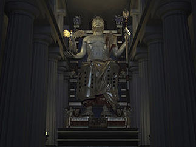

Statuia lui Zeus din Olympia
Informatie
Statuia lui Zeus este una dintre cele șapte minuni ale lumii antice, sculptată după tehnica criselefantină, în fildeș ornată cu aur și având o structură internă din lemn. Statuia, cu o înălțime estimată la aproximativ 12 m, a fost realizată de către sculptorul Phidias în preajma anului 435 î.Hr. în orașul Olympia din Grecia. Pentru adăpostirea statuii a fost construit un templu. Se crede că în anul 394 d.Hr. statuia a fost transportată la Constantinopol, unde avea să fie distrusă de un incendiu în anul 475. In 1958 a fost descoperit la Olympia și atelierul lui Phidias unde s-a lucrat la realizarea statuii și au putut fi identificate câteva din tehnicile de lucru (ulterior atelierul a fost transformat într-o bazilică creștină, în prezent ruinată).
Din mareata statuie ridicata lui Zeus la Olympia nu a ramas decât soclul. Aspectul ei ar fi ramas necunoscut, daca Pausanias nu ne-ar fi lasat bogata si amanuntita sa descriere.Autorul acestei opere, Phidias, era atenian, prieten si sfatuitor al lui Pericle. Era deja cunoscut, dupa ce realizase cu putin timp inainte statuia reprezentând pe Athena Parthenos din templul Parthenon de pe colina Acropolis din Atena. in mod asemanator, statuia lui Zeus a fost executata in tehnica chryselephantina, din lemn imbracat in foi de aur si cu placi de fildes.Dupa cum spune Pausanias, sculptorul a lucrat la opera sa intr-o cladire care se afla la vest de Altis si care era cunoscuta si sase secole mai târziu sub numele de "atelierul lui Phidias". El a avut drept colaboratori, un pictor - fratele sau, Panaenos - si un gravor, Colotes, originar din insula Paros. Dupa ce statuia a fost complet gata in atelier, ea a fost demontata si transportata piesa cu piesa in templu, unde a fost remontata pe soclul de marmora dinainte pregatit.Statuia avea inaltimea de aprox. 12 m, iar soclul nu depasea 14 m, infatisându-l pe Zeus asezat pe un tron cu un spatar inalt, bogat decorat. in mâna dreapta tinea o Victorie, lucrata in fildes si aur, capul era incununat cu ramuri de maslin. in mâna stânga, Zeus tinea un sceptru pe care statea un vultur de aur. O mantie ii cadea de pe umeri peste torsul gol si-i acoperea picioarele. Partile corpului neacoperite erau de fildes, picioarele erau rezemate pe un taburet, sustinut in cele patru colturi de sfincsi de aur.Tronul era bogat decorat, policrom, cu abanos, bronz, fildes, aur, pietre pretioase si picturi. Pausanias descrie in amanunt toate picturile care impodobeau tronul si care reprezentau lupte legendare, figuri de zei si chiar scene din jocurile olimpice. Astfel, sub sfincsii care sustineau bratele tronului erau basoreliefuri care-i infatisau pe Apollo si pe Artemis omorând copiii Niobei, pe traverse erau reprezentate lupte ale lui Heracles si ale lui Tezeu cu amazoanele, pe soclu, Afrodita iesea din spuma marii.Expresia fetei lui Zeus imprima privitorului o profunda emotie. Forta si in acelasi timp seninatatea au impresionat pe toti cei care au privit statuia si a caror parere s-a pastrat ca marturie scrisa.in fata statuii exista un bazin care continea uleiul necesar intretinerii, având in acelasi timp si rolul unei enorme oglinzi in care se reflecta statuia.Publicul nu se putea apropia de statuie, nici nu o putea vedea in in fiecare zi. Antioh al IV-lea Epifanul (175 - 164 i.Ch.), regele Siriei elenistice, a oferit templului o draperie de purpura, care a fost montata in fata statuii si nu era indepartata decât la solemnitati.Lumina care patrundea in templu si cea data de flacara parfumurilor care ardeau pe trepiede de bronz, era suficienta pentru a imbratisa toata maretia statuii. Umbre si lumini jucau pe sandalele de aur, prin cutele mantiei bogat drapate, pe torsul palid de fildes, pierzându-se pe fata calma si fruntea senina, in ochii care concentrau toata viata statuii.